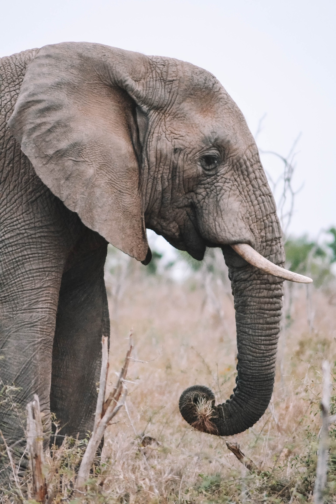
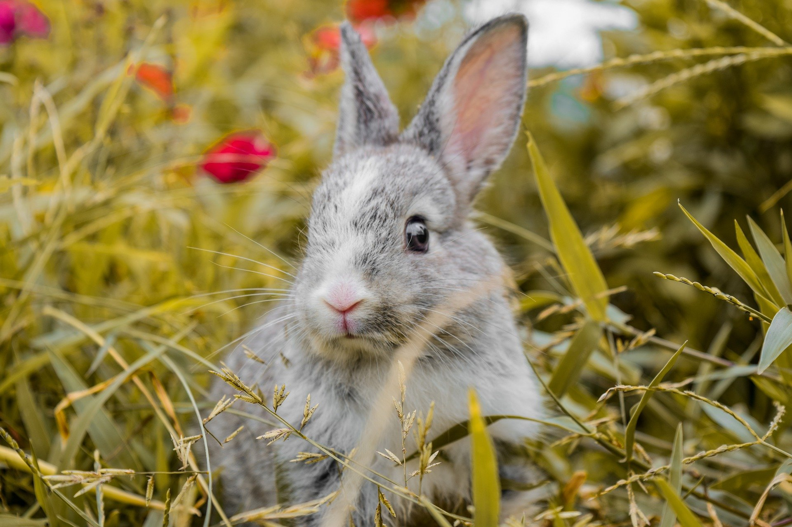
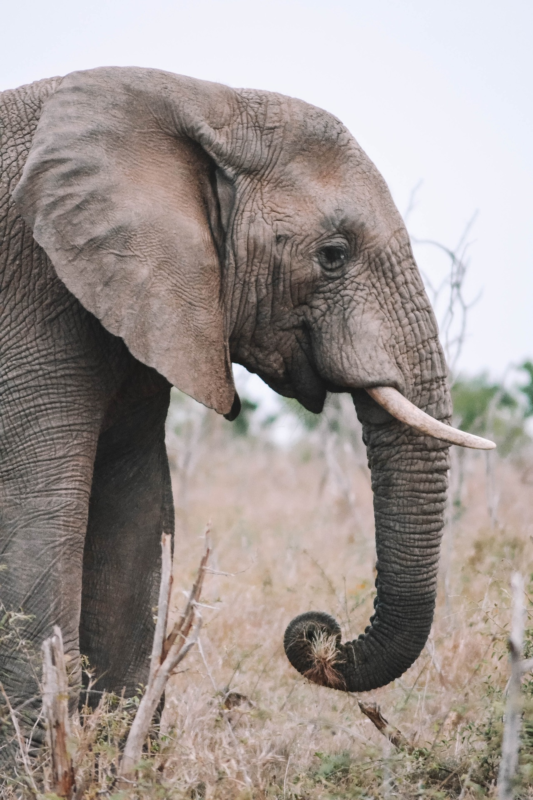
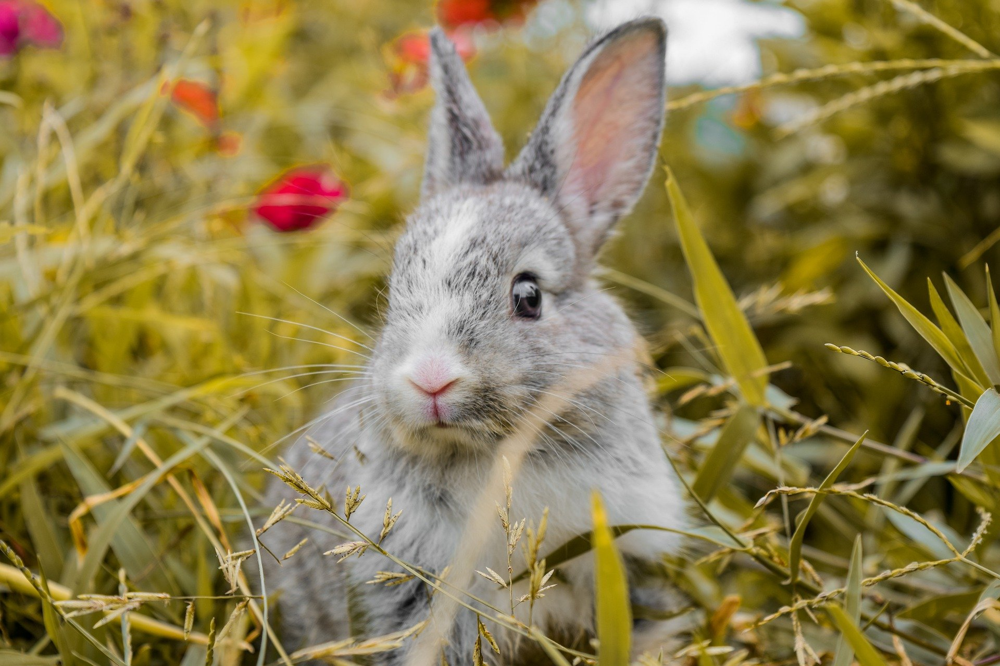
 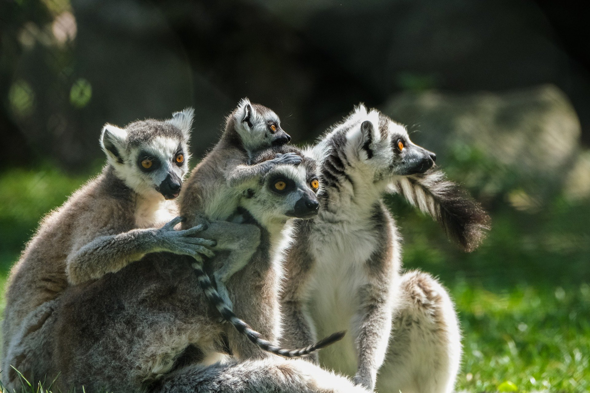
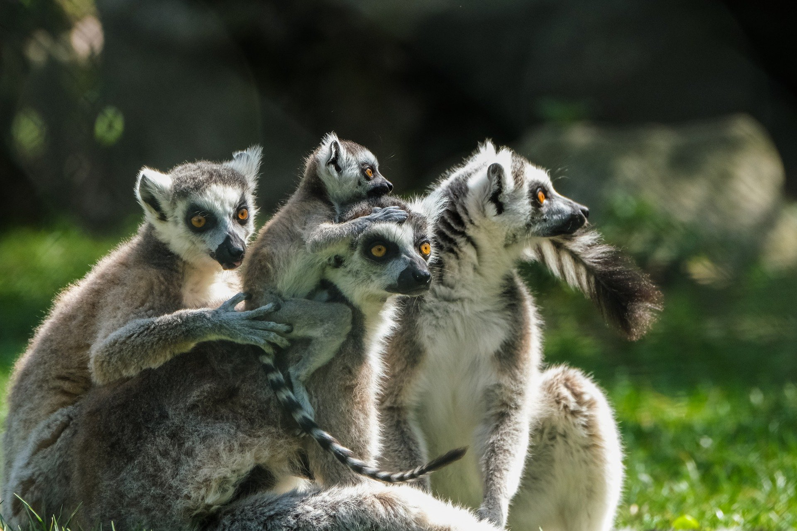
 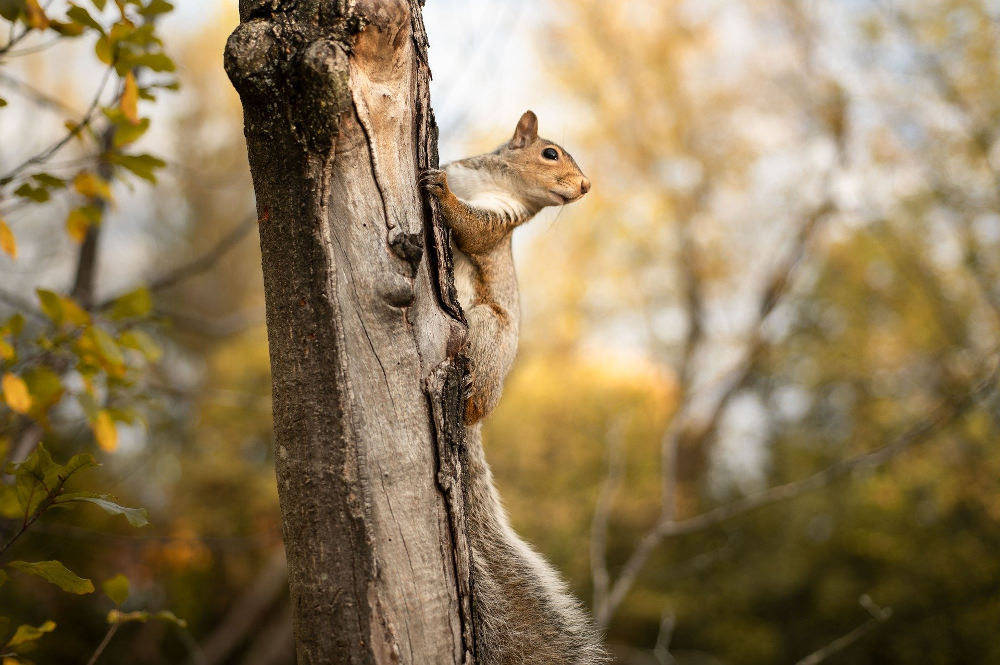
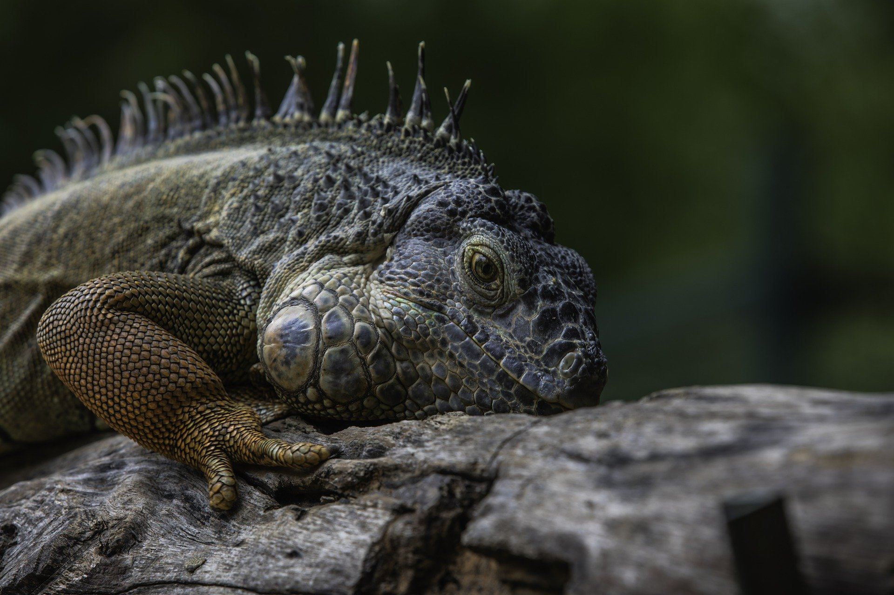
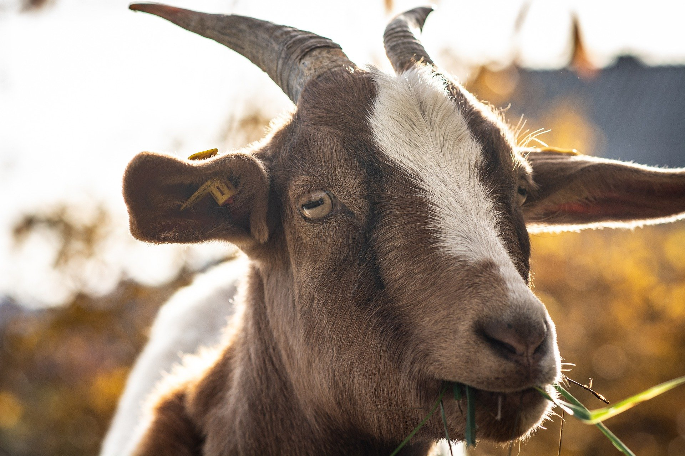
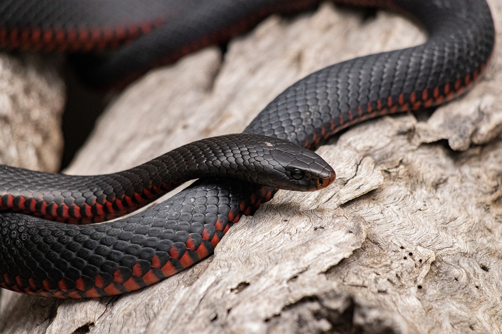
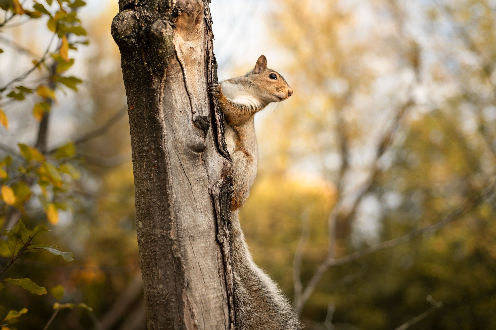
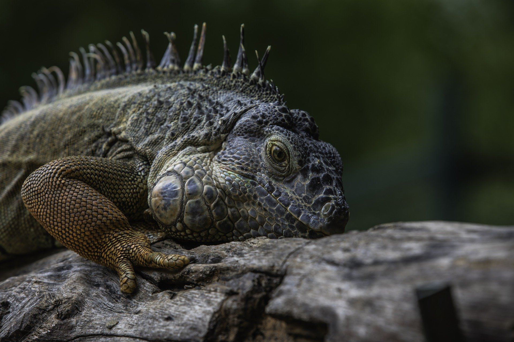
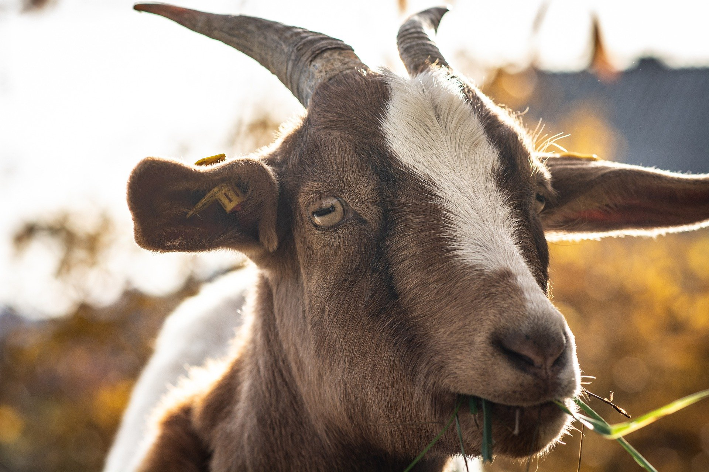
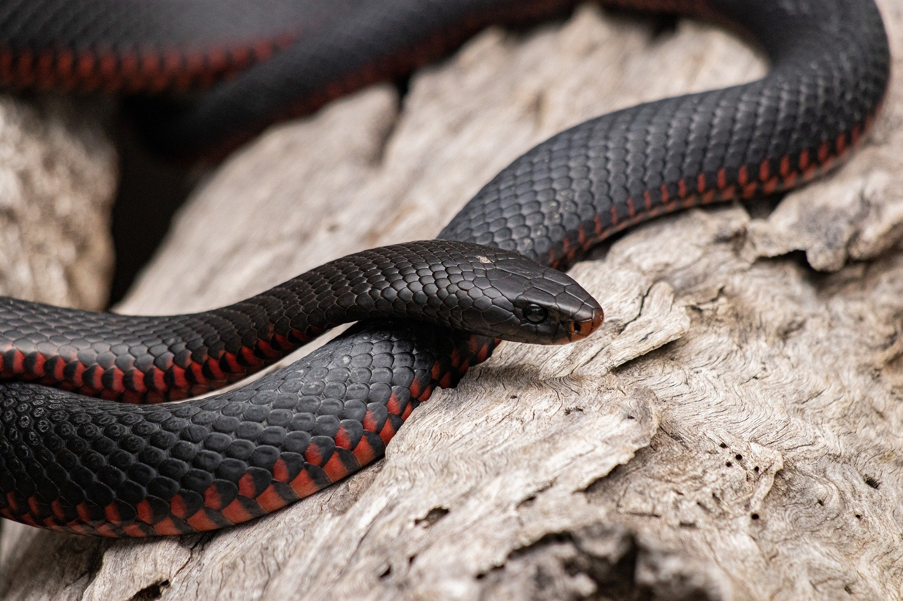
04 Fabruary 2022
One night in December 2011, a bear came into the city of Vancouver in Canada. It walked through the city streets past houses, shops and offices. Then it found some food in bins outside a restaurant and started eating. In the morning, someone saw the bear and called the police. The police came with a vet from the city zoo. They put the bear in a lorry and took it to the mountains outside the city. Luckily, the bear was safe. But what happens in other countries when big animals come into cities? In Vancouver it is unusual to see a bear, but in some cities you can see big animals on the city streets every day.
Big animals usually come into cities to find food. In Cape Town in South Africa baboons come into the city when they are hungry. They go into gardens and eat fruit from trees. They even go into houses and take food from cupboards and fridges! Baboons are strong animals and they can scare people. But the city can be dangerous for baboons too. Sometimes, cars and buses kill baboons in accidents. Human food is very bad for the baboons’ teeth because it has a lot of sugar. Now, there are Baboon Monitors working in Cape Town. Their job is to find baboons in the city and return them to the countryside.